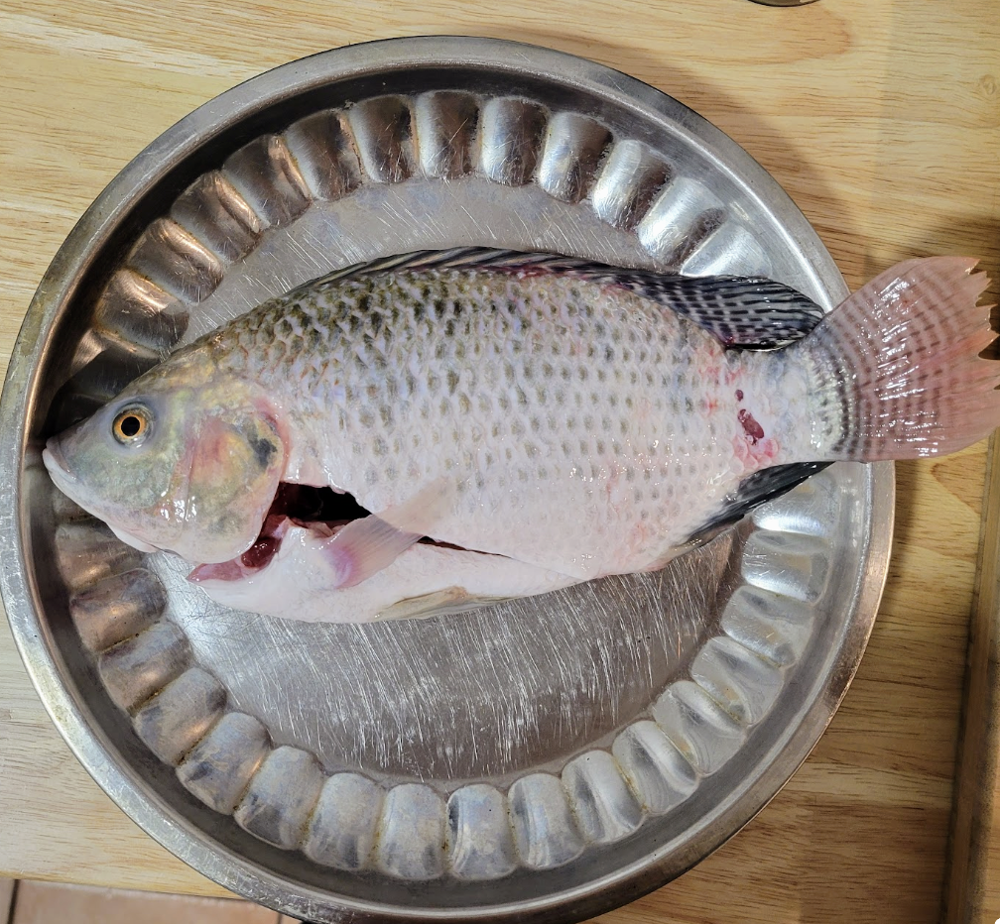
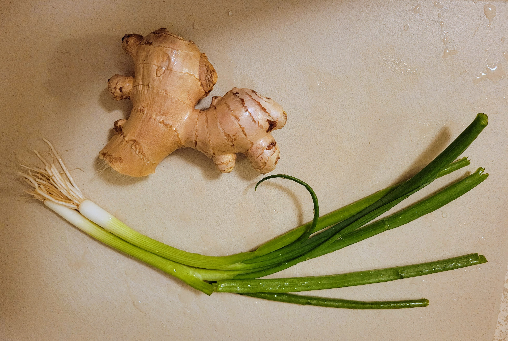

Steaming a Canto Fish
Nov 11, 2025

When I first moved to Seattle, I quickly realized how much I had taken the flavors of home for granted. Growing up, dishes like Cantonese-style steamed fish were a regular part of our family dinners. But here, far from my parents’ kitchen and the steady rhythm of weeknight meals, I found myself craving that comforting taste of home.
So, I picked up the phone, called my parents, and asked for their advice; the kind that never makes it into written recipes. With their guidance, I set out to recreate this classic dish in my tiny Seattle kitchen. What I ended up with was more than just a meal; it was a piece of my heritage brought back to life through steam, soy, and memory.
When picking a fish to steam, you have two options, live fish and fresh fish at the market. If you can, live white fish is best! Otherwise, here are some tips to help you choose a fresh fish.
Fresh Fish Signs:
- clear non cloudy eyes
- firm flesh
- scales do not come off
- gills are still red/pink underneath
Place the steam rack in a deep pan and fill with water until right below the top of the steam rack. Cover and heat on high.
Cut your aromatics. Ginger is sliced, and julienned.
Cantonese Steamed Fish
Ingredients
- fresh white fish
- 2 sticks green onions(sliced lengthwise)
- 1 inch ginger julienned
- 3 tbsp soy sauce
- 2 tbsp oil
Supplies
- steam rack
- deep pan
- 10" dish for steaming
Instructions
- Steam Setup: Place the steam rack in a deep pan and fill with water until right below the top of the steam rack. Cover and heat on high.
- Fish: Place fish into the dish you'll be using for steaming.
- Aromatics: Cut your aromatics. Ginger is sliced, and julienned.
- Steam Fish: When the water in the steam pan is boiling, place the dish with the fish onto the steam rack and cover. Steam on high heat for 10-12 minutes depending on the size of the fish.
- Stirfry aromatics: While it is steaming, begin heating up 2 tbsp of oil. When hot, quickly toss in aromatics for a few seconds.
- Arrange: Once fish is done steaming, take it out, drain the liquid and place stirfried aromatics on top. If the fish finishes steaming sooner, turn off heat and leave covered
- Done: Drizzle soy sauce over the fish. Enjoy!